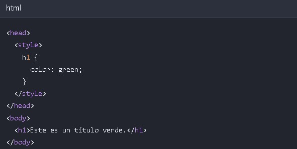

CSS son las siglas de Hojas de Estilo en Cascada (Cascading
Style Sheets), un lenguaje de diseño que se utiliza para controlar
el aspecto visual de documentos web escritos en lenguajes de marcado como HTML. Mientras que el HTML
proporciona la estructura
y el contenido de una página, el CSS se
encarga de su diseño, como el color, la fuente, el tamaño, la posición, los márgenes y otros efectos
visuales.
¿Cómo funciona?
Separación de contenido y estilo: CSS separa el contenido (HTML) del diseño,
lo que hace que el código sea
más fácil de mantener y más eficiente.
Control centralizado: Permite definir reglas de estilo para varios elementos en un solo lugar, que luego se
aplican a todos los elementos correspondientes en un documento o incluso en múltiples páginas web
mediante una hoja de estilo externa.
Reglas y selectores: Utiliza "reglas" que consisten en "selectores" que apuntan a elementos HTML específicos
(como encabezados o párrafos) y "declaraciones" que definen el estilo a aplicar (como color: blue; o
font-size: 16px;).
Beneficios clave
Diseño coherente: Asegura que los elementos de una página web se vean iguales
en diferentes navegadores y
dispositivos.
Páginas más rápidas: Al separar el estilo del contenido, las páginas se cargan más rápido.
Responsividad: Facilita la creación de sitios web que se adaptan a diferentes tamaños de pantalla (diseño web
responsivo).
Mantenimiento sencillo: Es más fácil actualizar el diseño de un sitio web entero simplemente modificando un
único archivo CSS.
2.- ¿Cómo utilizar CSS con HTML?
Puedes usar CSS con HTML de tres formas principales: en línea, con la
etiqueta style interna en el head>, o mediante un archivo externo vinculado con la etiqueta
link>. La forma más recomendable es el archivo externo, ya que separa el código CSS del HTML y facilita el
mantenimiento.
3. CSS en línea
Cómo funciona: Se aplica un estilo directamente a un elemento HTML
específico utilizando el atributo style dentro de la etiqueta.
Uso común: Ideal para aplicar estilos únicos y rápidos a un solo elemento, como una prueba rápida.
Desventaja: No es reutilizable y puede hacer que el código HTML sea menos legible, ya que mezcla el contenido y
el estilo.
Ejemplo: p style="color: blue;">Este texto es azul./p
4. CSS interno
Cómo funciona: Se incluye dentro de la etiqueta style> en la sección head> de
un documento HTML.
Uso común: Adecuado para aplicar estilos a una sola página HTML.
Desventaja: No es eficiente para aplicar el mismo estilo a varias páginas, ya que el código CSS debe
repetirse en cada archivo.
ejemplo:

5. CSS externo
Cómo funciona: El código CSS se escribe en un archivo .css separado. Este
archivo se vincula al documento HTML mediante una etiqueta
en el
.
Uso común: Es el método preferido y más eficiente para sitios web con múltiples páginas, ya que permite
la reutilización de estilos en todo el sitio.
Ventajas: Facilita el mantenimiento y la actualización del diseño, mejora la velocidad de carga y
mantiene el código HTML limpio.